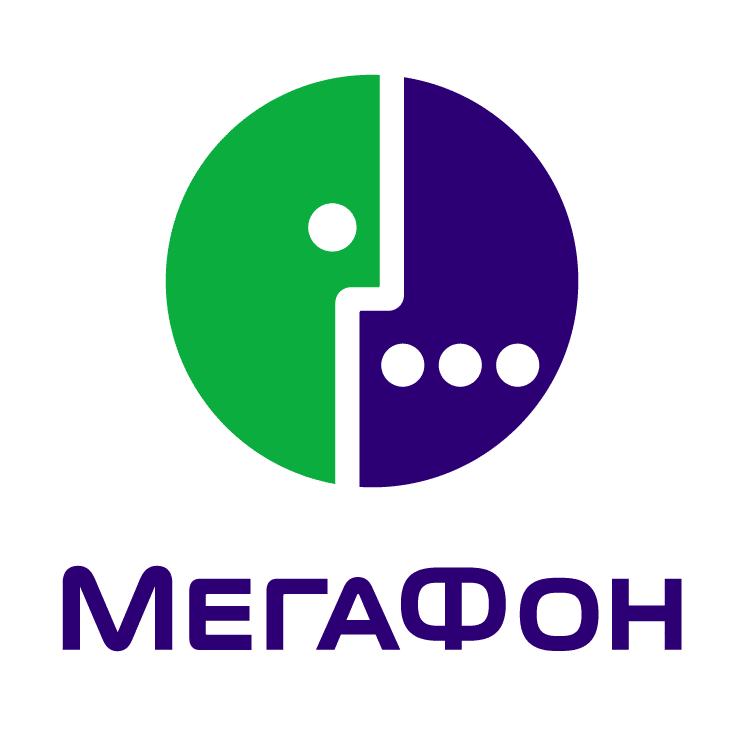

Мегафон
1993 год, 17 июня — дата регистрации ЗАО «Северо-Западный GSM» (Санкт-Петербург). Первым генеральным директором стал Александр Малышев. Крупнейшими зарубежными инвесторами стали скандинавские компании Sonera (Финляндия), Telia International AB (Швеция) и Telenor Invest AS (Норвегия).
Мегафон - один из крупнейших операторов связи в России. Компания предоставляет услуги мобильной связи, интернета, телевидения и телекоммуникаций. Кампания Мегафон активно продвигает свои услуги через различные виды рекламы, включая телевизионные, радио и онлайн рекламные ролики, а также партнерские соглашения и спонсорские активности. Компания также проводит различные промо-акции и акции для привлечения новых клиентов, например, бесплатные звонки и интернет-трафик, а также скидки на устройства и услуги. Мегафон известен своим инновационным подходом к развитию и предоставлению услуг, а также активной работой в области корпоративной социальной ответственности.